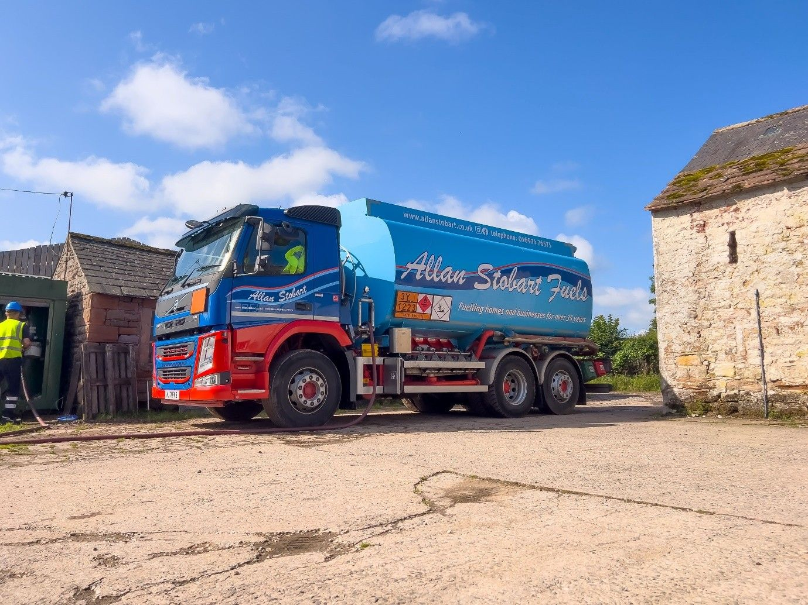

Allan Stobart Lubricants and Fuels announces expansion plans

Allan Stobart Lubricants & Fuels is expanding its distribution network by reopening its storage depot in Carlisle to operate alongside their existing depots at Raughton Head and Hexham. The base on the Kingstown Industrial Estate will increase the fuel storage capacity by more than 40% and provide easy access to the major road network for tankers, making it better placed to service customers in southern Scotland.
Its reinstatement includes the installation of new fuel storage tanks as well as onsite office space following the site being rented out for vehicle storage for several years.
The site on Parkhill Road operated as a WCF fuel depot for more than 20 years until 2016 when it was closed to bring operations together at Allan Stobart’s head office and depot at Raughton Head, near Dalston, Carlisle. Planning permission was granted earlier this year and it is expected to be operational by late autumn.
Steve Hindmarsh, General Manager of Allan Stobart Lubricants & Fuels, said the business was responding to a changing marketplace. “This move signals our investment in the future and our commitment to ensuring we deliver the best possible service for our customers. The changing nature of the fuel distribution business means that we need to be flexible and be in a position to react to the changing marketplace. Increasing our fuel storage capacity enables us to be more resilient during periods of peak demand and ensures we can meet our customers’ needs and get deliveries to them as soon as possible. The investment in this site will help us expand our customer base while continuing to provide a quality service to our existing customers.”

Press Links